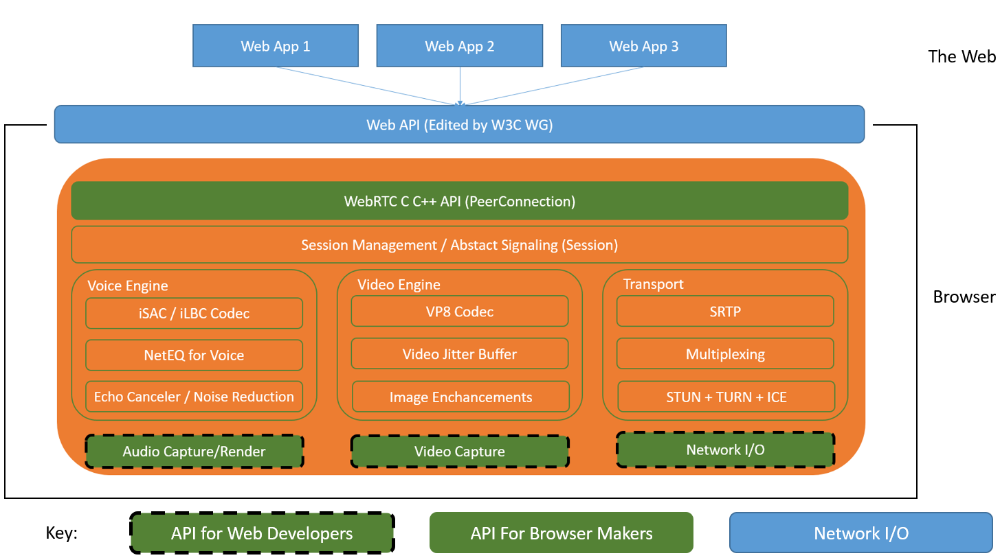
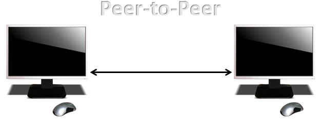
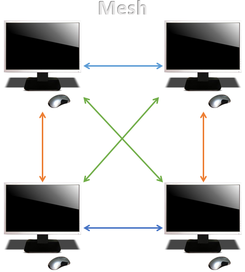
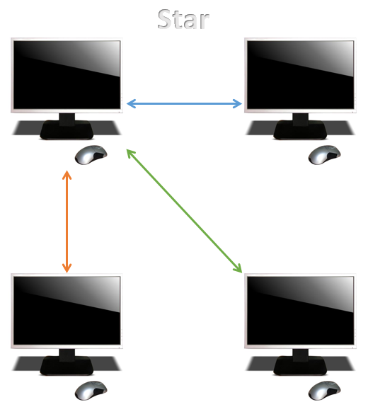
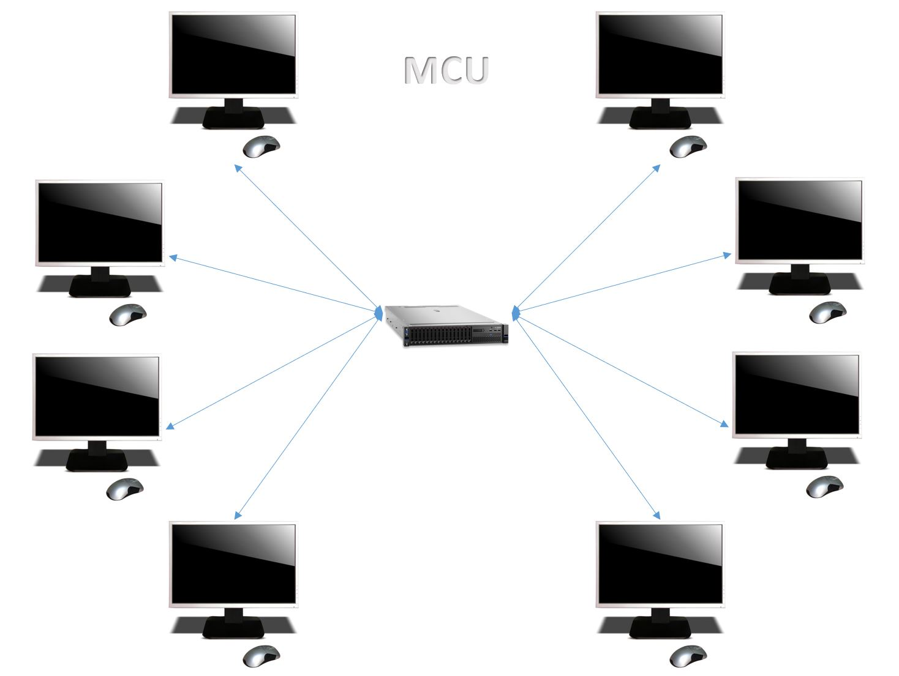

The purpose of WebRTC is to support RTC applications that works across multiple browsers and platforms. It offers web application developers the power to create advance realtime multimedia applications on the web without needing to download and install third party software or the requirement of plugins.
To jump straight into it, the over architecture of a WebRTC application can be complex and looks something like this:
There are two main layers of this architecture diagram which are:
| Name | Description |
|---|---|
| Web App | A third party application with video and audio capabilities powered by the web API for RTC. |
| Web API | An API used by third party developers for developing web based videochat-like application. |
| WebRTC Native C++ AP | This layer allows browsers to effortless implement the Web API proposal |
| Transport / Session | The session components are built by re-using components from libjingle, without using or requiring the xmpp/jingle protocol. |
| RTP | A network stack for Real Time Protocol. |
| STUN / ICE | A component allowing calls to use the STUN and ICE mechanisms to establish connections across various types of networks. |
| Session Management | An abstracted session layer, allowing for call setup and management layer. This leaves the protocol implementation decision to the application developer. |
| Voice Engine | VoiceEngineis a framework for the audio media chain, from sound card to the network. |
| Video Engine | VideoEngine is a framework video media chain for video, from camera to the network, and from network to the screen. |
| VP8 | Video codec from the WebM Project. Well suited for RTC as it is designed for low latency. |
| Video Jitter Buffer | Dynamic Jitter Buffer for video. Helps conceal the effects of jitter and packet loss on overall video quality. |
| Image Enchancements | For example, removes video noise from the image capture by the webcam. |
Browser-based multi-party calls takes full advantage of the features and benefits of WebRTC. There are a variety of different architectures that are suitable for the implementation of multi-party calls and here are some of them.
Peer-to-peer simple two party case where two peers are linked, but as you start to add more peers to the mix, things can get a litter more complex. One approach that some people use is a mesh, where every peer is connected to every other peer in the call. This is really simple because there’s no servers or anything involved, other than the signalling stuff. However, this architecture works by every peer sending and copying data to every other peer which can result in CPU and bandwidth cost. Depending on the media that’s being sent (for audio it can be higher than video), the number of peers that can be supported by the mesh architecture is limited, especially if one peer is a mobile device.
To deal with that problem, another architecture can be used which is referred to as the ‘star’ architecture. With this architecture, the most capable device is picked to be what is called the focus for the call. The focus is the part that’s actually responsible for taking the data and sending a copy to each of the other endpoints.
The star architecture is a satisfactory solution, but as multiple HD video stream begin to build up in the party, the job for a focus becomes difficult. Therefore, for a most robust multi-party call, Multipoint Control Unit (MCU) is the best solution. This is a server that is used to relay substantial amounts of audio and video or in other words, to bridge video conferencing connections. It can do various things such as selective stream forwarding, mix audio or video data, and recording. MUC is designed to take care of everything, so if one peer drops out, the whole conference won’t be interrupted.
{kind=link}
{kind=link}
{kind=link}
{kind=link}
{kind=link}